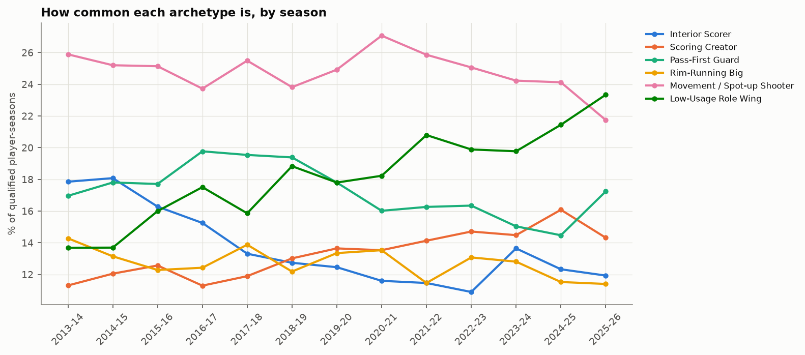
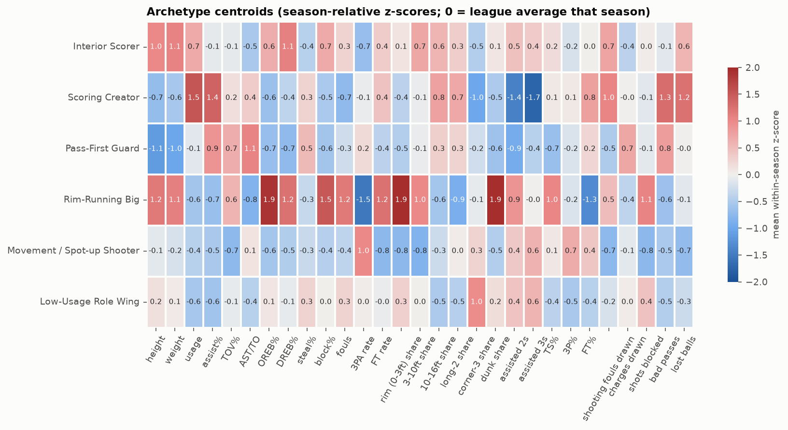
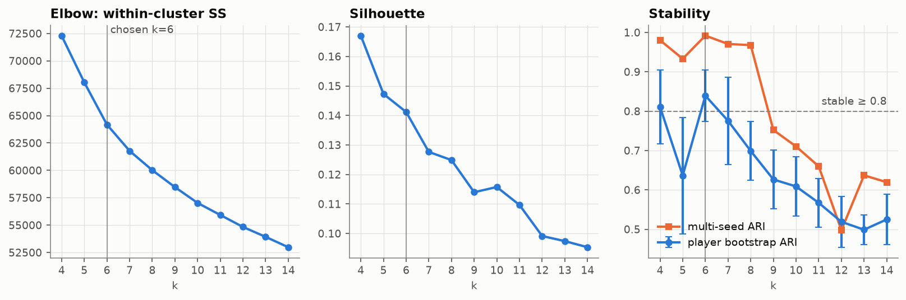

NBA analytics · K-Means on season-relative style features
Every qualified player-season from 1996-97 to 2025-26 sorted into one of six roles based on how a player is used, not how good he is or what position he's listed at. The model is fit on 2013-14 to 2025-26 and applied to earlier seasons without refitting. Code on GitHub
Start typing a name. Seasons with fewer than 20 games or 500 minutes aren't labelled.
Averages over 4,669 fitted player-seasons. WS/48 and BPM were never model inputs; they're shown to describe each group, not to define it.
Who filled each role in a given year.
Shares are within-season, so they track the mix of roles rather than the league-wide rise in three-point volume.


